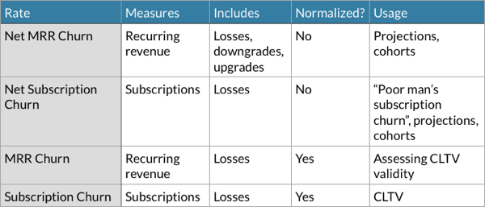
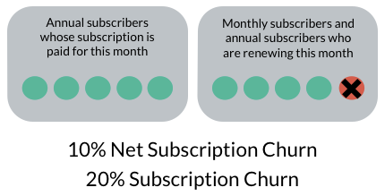

Why do I need 3 different Churn Rates?
Have you ever wondered why there are so many different Churn Rates? What’s the point?
Let’s find out! Even though this article does not answer a direct business question, it’s important to understand how the Churn Rates work.
When you understand the differences, you’ll be able to answer questions like:
- “If I’d lose my main acquisition channel, how long would my business survive?”
- “Am I losing high-value or low-value customers?”
- “Can I trust my Customer Life-Time Values?”
And more importantly - you can be confident that you answers aren’t wrong.
How do the Churn Rates differ?
The table below lists the Churn Rates and their features.  
Subscription, User and Customer Churn should be calculated separately if necessary. They are used for the same purposes and they are often the same number, so only Subscription Churn is listed in the table.
What's normalization?
Normalization means that the effect of time is taken into consideration.
When talking about Churn, normalization requires 2 actions.
Normalized Churn Rate:
-
Only includes customers who had a subscription up for renewal and were able to churn, not everyone
-
Converts the Churn Rate from annual subscriptions into a monthly Churn Rate.
Rule of thumb for using the Churn Rates
Normalized rates tell you about the behavior of a single average customer.
The non-normalized rates tell you about your business as whole.
That means we’ll use Net MRR Churn Rate for financial projections and estimating how the whole customer base behaves.
And we’ll use Subscription and MRR Churn Rates for estimating average customer behavior.
FirstOfficer.io shows Net MRR Churn Rate, MRR Churn Rate and Subscription Churn Rate.
Why can’t I use just one Churn Rate?
You can - as long as you offer just one plan and no annual subscriptions.
The one Churn Rate you’d start with is the Net Subscription Churn Rate - lost subscriptions compared to the subscriptions you had at the beginning of the month.
Net Subscription Churn Rate is easy to calculate and can be used for almost anything - but its meaning changes when your business develops.
It gradually stops working for the purposes you initially used it for.
When you add more plans, you should start using MRR Churn Rates so that you can see if people in different plans behave differently.
When you add annual plans, you should start using normalized Churn Rates when you want to calculate unit metrics like Customer Life-Time Value (CLTV).
What happens if unit metrics are calculated with non-normalized rates?
You might get worried that your business performance is crashing - when you just had lots of annual subscriptions up for renewal. Or you may believe that your CLTV values are 3-5 times higher than they actually are.
The effect is not theoretical - I've seen cases like above.
Here is an example:

In this example your overall customer base shrinks at 10% monthly rate.
Average customers however, when having an opportunity to churn, leave at 20% monthly rate.
How to answer the business questions?
Now we can look at the questions in the beginning of the article again.
“If I’d lose my main acquisition channel, how long would my business survive?”
What if… you stopped getting new customers? How long would it take to lost all the monthly subscription revenue?
This question concerns your whole customer base and you are interested in money (vs. subscriptions). That means we use Net MRR Churn.
Just invert it…
(1/churn rate) *100%
… and you have the answer in months.
Here are a couple of pre-calculated values:
 

It's not the most accurate formula, but works fine with rates smaller
than 10% and it's a rough estimate anyway. In practice, you'd use this churn rate to create a projection which includes also the expenses and your cashflow.
Net Churn Rates are sometimes volatile, so it’s best to take an average churn rate from a longer period and check that the annual customers are evenly distributed throughout the year.
“Am I losing high-value or low-value customers?”
This question is about the average lost customer - so we need the normalized Churn Rates.
One of our Churn Rates measures money, the other people. If we lose more people than money, we lose low-value customers. And if we lose more money than people, we lose high-value customers.
When we compare the MRR Churn Rate to Subscription Churn Rate and the MRR Churn Rate is bigger, you lost high-value customers. If the MRR Churn Rate is the better one, you lost low-value customers.
“Can I trust my Customer Life-Time Values?”
The simple answer is 'No'.
The non-profit-based CLTV should always be adjusted with gross profit margin - and even after that it is often not reliable even when calculated right. As you just learned, when your churn rates are low enough, CLTV tries to estimate behaviour years onwards.
Jason Cohen has an excellent article on this topic: The mistake of 1/c in LTV calculations.
That said, if you choose to use CLTV, here's the key to assess it:
The calculations are for your average customer.
If you mostly lose high-value customers, the CLTV will be overestimated.
If you lose low-value customers, the CLTV will be underestimated.
So you can actually use the answer from the previous question to answer this one.
If your MRR Churn Rate and Subscription Churn Rate are similar, the CLTV’s are trustworthy. But also check that the ARPU of new customers isn't very different from the ARPU of all customers.
Often a single CLTV value for whole customer base is useless unless you offer a single monthly plan. Most SaaS businesses should use plan-specific CLTV values.
It’s also worth to follow up the realized Total Contract Values (TCV) - sometimes even per cohort.